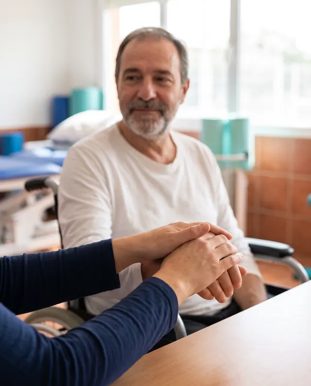
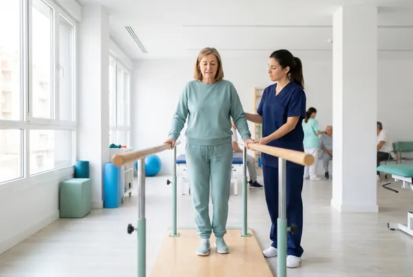
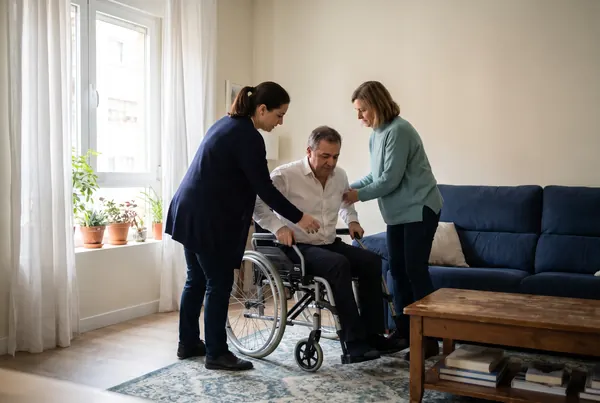
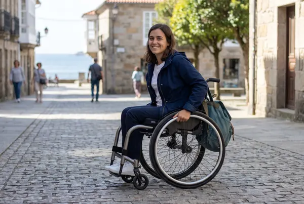
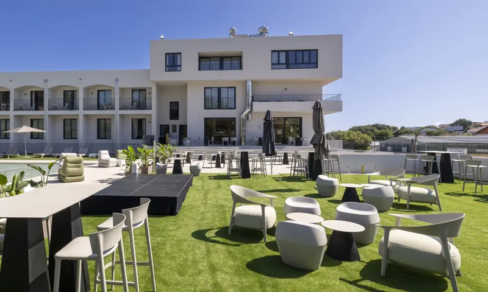
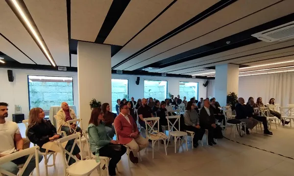

Conocimiento e innovación en neurorrehabilitación
«Una persona con una discapacidad de origen neurológico no tiene un problema médico, terapéutico o técnico. Tiene una vida que ha cambiado.»
NEUROQUO conecta medicina, terapias, cuidados, ortopedia técnica, tecnología e investigación alrededor de lo que de verdad importa: la autonomía y la participación de la persona fuera del centro sanitario.

Continuidad
Del hospital a la vida
Las decisiones más difíciles no se toman en un solo lugar. NEUROQUO trabaja en las transiciones: donde la decisión clínica tiene que convertirse en una solución que funcione en casa, y donde la rehabilitación demuestra que mejora la vida real.
Hospital
Estabilizar · tratar · iniciar
La fase aguda y la neurorrehabilitación hospitalaria, donde empiezan las decisiones que acompañarán a la persona durante años.

Domicilio
Adaptar · entrenar · cuidar
Transferencias, sedestación, comunicación y cuidados en un entorno real, con la familia y con recursos que no siempre llegan.

Comunidad
Participar · trabajar · disfrutar
El proyecto de vida: volver a estudiar o trabajar, moverse por la ciudad y decidir sobre la propia vida.

Por eso conectamos prescripción, adaptación, entrenamiento y reevaluación, y medimos el desempeño en casa y en la comunidad, no solo la capacidad en consulta.
Arquitectura
Cinco espacios, un único ecosistema
Aprender, experimentar, medir, compartir y conectar. Empezamos por el encuentro presencial y abriremos el resto de espacios cuando tengan la estructura para cumplir lo que prometen.
ACADEMY
Formación rigurosa y práctica: cursos, talleres, sesiones clínicas y programas avanzados.
En preparaciónLAB
Problemas reales de movilidad, sedestación, ortesis, comunicación, domicilio y tecnología, resueltos en equipo.
En preparaciónRESEARCH
Investigación aplicada y resultados en vida real, con hospitales, universidades y grupos de investigación.
En preparaciónEXPERIENCE
El gran encuentro presencial: casos, debate, talleres, tecnología y la voz de pacientes y familias.
24 de septiembre de 2027COMMUNITY
Una red profesional activa todo el año para compartir conocimiento, proyectos y colaboración.
En preparaciónPrimera edición
NEUROQUO Experience 2027
Una jornada sin ponencias consecutivas. Todas las disciplinas trabajan sobre un mismo caso, votan en equipo y se llevan herramientas que pueden aplicar el lunes.
Las inscripciones se abrirán en la primavera de 2027.
Cuatro mesas de decisión
- Comprender¿Cómo se rehabilita a quien no siempre puede colaborar?
- SostenerSin control de tronco y con un hombro doloroso: ¿qué sedestación necesita?
- Expresarse¿Cómo damos voz a quien entiende pero no puede hablar?
- VivirEscaleras, un baño estrecho y pocos recursos: ¿qué hace falta para volver a casa?
Sede
Hotel H4 Cangas, en la ría de Vigo
La primera edición se celebra en Cangas de Morrazo, frente a Vigo: un hotel con salones amplios y un gran jardín, a quince minutos a pie del centro de Cangas.


El hotel está acostumbrado a congresos y convenciones, y tiene espacios de distintos tamaños para que el plenario, los equipos y los LAB trabajen a la vez sin pisarse.
- Aparcamiento
- Recepción 24 h
- Restaurante
- Habitaciones adaptadas
- Carga para coche eléctrico
- Alojamiento en el propio hotel
Cómo llegar
- En barco desde Vigo: los barcos de la ría unen la estación marítima de Vigo con el puerto de Cangas. El hotel está a unos quince minutos a pie del centro de Cangas, o a un trayecto corto en taxi.
- En coche: desde Vigo por el puente de Rande y la autovía del Morrazo. El hotel tiene aparcamiento.
- Accesibilidad: el hotel dispone de habitaciones adaptadas para personas con discapacidad. Si necesitas condiciones concretas de acceso, transporte o alojamiento, escríbenos a hola@neuroquo.es y lo preparamos contigo.
Modelo NEUROQUO
Una persona, muchas miradas
No preguntamos primero qué producto, técnica o tecnología tenemos. Preguntamos qué problema de la persona queremos resolver.
Movimiento y tono
Medicina rehabilitadora · neurología · fisioterapia · ortesis · FES
Posición y movilidad
Medicina rehabilitadora · terapia ocupacional · fisioterapia · ortopedia técnica · sedestación
Comunicación, cognición y deglución
Logopedia · neuropsicología · medicina · enfermería · SAAC
Vida cotidiana y participación
Terapia ocupacional · enfermería y TCAE · familia · accesibilidad · trabajo y ocio
Credibilidad
Independencia, por escrito
El apoyo de la industria hace posible lo que hacemos. Las conclusiones las decide el criterio científico, y lo decimos abiertamente.
Declaración de intereses
Ponentes, moderadores, facilitadores y dirección científica publican sus conflictos de interés.
Patrocinio sin decisión
Los patrocinadores aportan tecnología y equipamiento, pero no eligen ponentes ni revisan conclusiones. Figura en cada acuerdo.
Comparar sin marcas
Los criterios se fijan antes de conocer el resultado. En el Circuito Vida Real, las sillas compiten sin logotipos.
Gestión independiente
Inscripciones, cuotas, acreditación y votaciones las lleva una secretaría técnica independiente.
Voz equitativa, medida
Se publica el tiempo de palabra de cada disciplina. Ninguna abre ni cierra los debates por defecto.
Patrocinio diversificado
Buscamos varios patrocinadores para que ninguna actividad dependa de un único financiador.
Declaración de la dirección científica: titular de la marca NEUROQUO y organizador de la jornada; vínculo familiar directo con la propiedad de Exclusivas Iglesias, patrocinador principal.
Contacto
Hablemos
Si quieres participar como panelista o facilitador, colaborar desde tu institución o apoyar la jornada, escríbenos.
Profesionales
Ponencias, mesas, LAB y equipo asesor por disciplina.
hola@neuroquo.esEmpresas y patrocinio
Tecnología, equipamiento y zona CONNECT, con las reglas de independencia por escrito.
patrocinio@neuroquo.esInscripciones y logística
Las gestiona TRAMA, secretaría técnica. El enlace de inscripción se publicará aquí en la primavera de 2027.